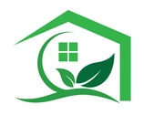

Solar Panel
Solar Panel provides a secure future investment. Adding a Battery backup to solar power system will provide additional independence.
It would not only be generating own power but also storing it for use when the main grid fails. It is also carbon free, no harmful
emissions are released when electricity is being produced by solar panels.Invest today in your own solar rooftop system for more saving better service and improved lifestyle.
Wooden House Architecture
Solid wood walls represent excellent heat insulation and provide a pleasant and healthy living environment. Wooden houses require much less
energy for heating and cooling because the feeling of cold or heat in the space compensates for about 2° C, which in addition saves
energy.
Volatile Organic Compounds
We want to use materials that avoid Volatile Organic Compounds or VOCs. Examples include using low VOC paint or glues in the construction of your new home.
Use materials that can be recycled later or have already been recycled. Using local materials is a good start to sustainability. There are lots of sustainable materials in nature, for example wood, that are renewable and certified.
You should also make sure that the materials you choose are durable! It is not sustainable to replace materials every few years.
LED lights
LED lights are becoming more and more common as an energy efficient home design feature. In our projects they are standard. All of our clients want LED lights. They are going to reduce your energy cost (they use less power) and you will not need to change the bulbs for many years. They might be a little more costly upfront, but think
of the savings on electricity and less frequent changing of the bulbs! Energy efficient lighting is an easy addition to a sustainable house.
Toilets and other plumbing fixtures
Toilets and other plumbing fixtures are not the same as they used to be. They make dual flush toilets where you can choose a lower or higher flush rate as needed. All your plumbing fixtures can have reduced or Low-flow water usage, including faucets and shower heads. These fixtures are becoming very popular. You will have no trouble
finding plumbing fixtures that use water at lower flow rates. There is no need to be wasteful.
Recovery Ventilator
an ERV or Energy Recovery Ventilator. If you have exhaust fans and ducts in your home, for example in your bathroom, the ERV can use
the heat from the exhaust to preheat or precool the air being brought into your home. Preheat the air in the winter or precool the air
in the summer with an ERV to reduce energy usage on your HVAC. Don’t worry: it doesn’t actually mix the exhaust air with the new air!
It just uses the heat from the exhaust.
hot water
Solar hot water is a system for heating water using the Sun. It can be installed on your roof and can heat your water.
tankless water heaters or instant hot water. These use less energy and they heat up instantly
Roof Gutters and Downspouts
roof gutters and downspouts that direct the water to a tank for reuse. This water can be used to flush your toilets or water the garden. Rain water (depending on your area) can even be used for drinking if you filter and purify it. The most typical use of rainwater collection is for gardening / irrigation. use a concrete
underground detention tank to store the water with a pump to circulate the water. Sustainable homes need a smart manner of dealing with water.